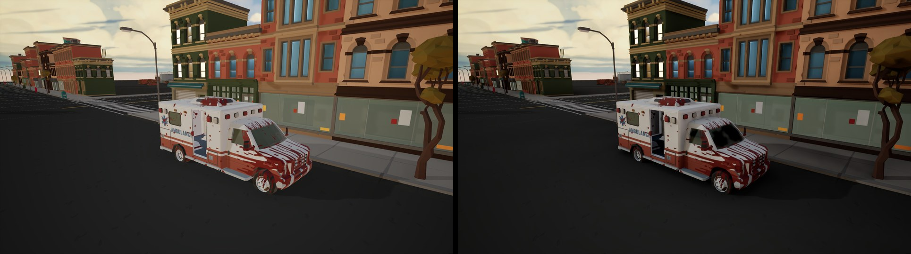
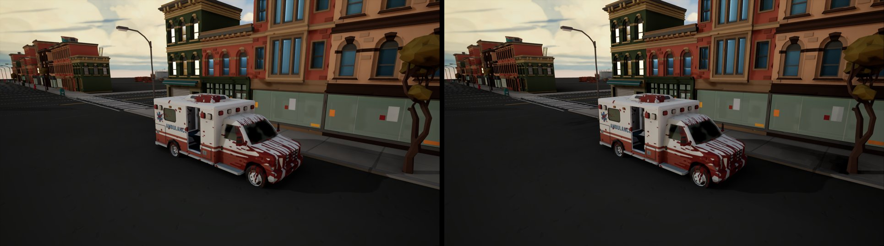
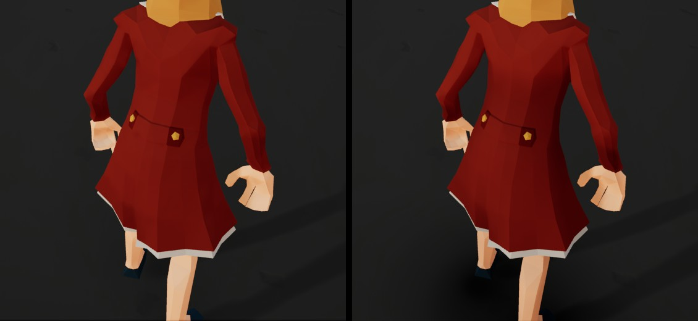
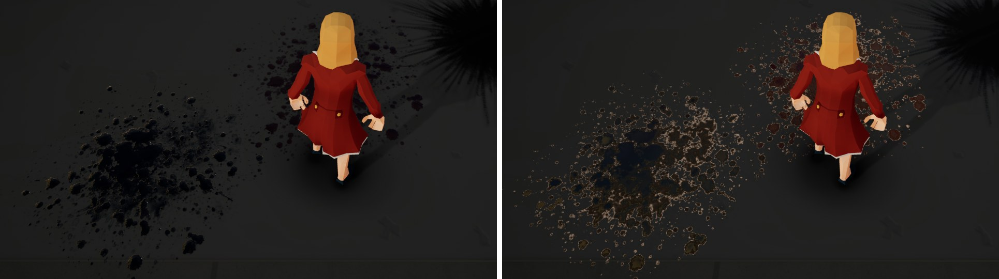
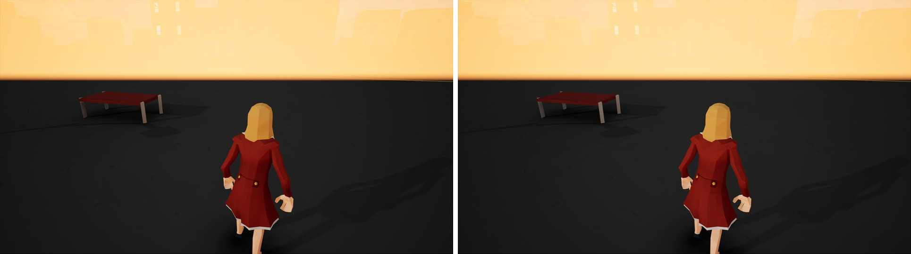
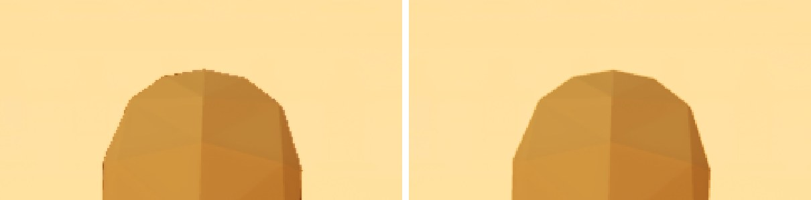
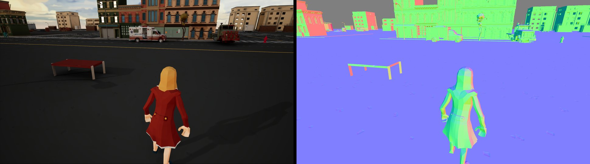

What you get
Smooth edges
MSAA with a wider, smoother resolve. Thin railings, poles and wires stop shimmering.
No halos
Shadows and AO no longer bleed across MSAA edges.
AO that works in forward
Screen-space, distance-field and street-scale occlusion from buildings, all of it MSAA-aware.
Contact shadows
Characters darken the ground under them, using the engine's capsule shadows.
Reflections
Screen-space reflections work alongside MSAA.
World normals
Post-process materials can read SceneTexture WorldNormal in forward.
Decals in the base pass
Decals change base colour, normal and roughness before lighting, so every light shades them, at every MSAA sample.
Bounce light
Coloured light bounced off the buildings and street around you, from the same height capture as the occlusion.
Contact shadows for anything
Vehicles and props darken the ground under them too, without distance fields.
Clean soft particles
Depth-faded particles stop leaving a halo around foreground edges.
In motion
Aliasing is worst in motion. The same gameplay before and after.
NOTE: Video compression is quite aggressive here.
Compare
The same frame in each mode. Pick a view, then click a mode or press 1 to 5. The lower image is a 3x crop so you can see the edges.
Ambient occlusion







Set it up
You need a UE 5.8 source build, and a project on the mobile renderer: bPreferFeatureLevelES31 on PC, or a mobile platform.
- Download the repository and apply the fourteen patches in
Patches/to the engine, in order, withgit apply. - Build the editor. The first launch recompiles every material.
- Add the settings below to
Config/DefaultEngine.iniunder[/Script/Engine.RendererSettings], then restart the editor.
r.Mobile.ShadingPath=0
r.Mobile.AntiAliasing=3
r.MSAACount=4
r.WideCustomResolve=2
r.Mobile.MSAA.EdgeAwareFetch=1
r.Mobile.MSAA.SkipRedundantResolve=1
r.Mobile.AmbientOcclusion=1
r.DefaultFeature.AmbientOcclusion=TrueThe README covers the optional extras (distance-field AO, contact shadows, reflections, occlusion and bounce light from buildings, decals, soft particles, world normals), what to check when something doesn't show up, and every setting.
Cost
GPU time at 1901x1269 with 4x MSAA, in a city scene in the editor.
| Feature | Cost |
|---|---|
| Smoother resolve | 0.014 ms |
| Edge fixes for shadows and AO | 0.003 ms |
| Screen-space AO | 0.07 ms |
| Distance-field AO | ~0.25 ms |
| Occlusion from buildings | 0.18 ms |
| Contact shadows (one character) | 0.026 ms |
| Screen-space reflections | ~0 ms |
| World normals | ~0.07 ms |
| Bounce light from buildings | 0.02 ms |
| Contact shadows for movables (12 casters) | 0.045 ms |
Under the hood
What each patch changes
| Patch | Stock 5.8 | Patched |
|---|---|---|
| 1 Wide resolve | Mobile gets a 1-pixel box filter; the wider resolve only compiles for desktop. | The wider resolve runs on the mobile renderer (r.WideCustomResolve). |
| 2 Distance-field shadow fix | The distance-field shadow pass is dropped under MSAA, with an ensure at startup. | Works under MSAA. |
| 3 Edge fetch and AO | Shadows and AO bleed across MSAA edges. Forward reads AO from a channel nothing writes, and mobile SSAO never runs on PC. | Edge samples fetch from the matching surface (r.Mobile.MSAA.EdgeAwareFetch). Forward gets SSAO. |
| 4 Skip resolve | A hardware resolve runs that the custom resolve then overwrites. | Optionally skipped (r.Mobile.MSAA.SkipRedundantResolve). Identical output. |
| 5 Forward distance-field AO | Mobile distance-field AO only works in deferred. | Works in forward (r.Mobile.DistanceFieldAO). |
| 6 Contact shadows and SSR fix | Capsule sky occlusion is disabled on mobile. Mobile SSR crashes with patch 4. | Capsule occlusion on mobile, optionally cast straight down (r.CapsuleIndirectSkyLightFromAbove). SSR safe under MSAA. |
| 7 World normals | Forward has no normal buffer, so post-process materials cannot read WorldNormal. | Optional normal target (r.Mobile.Forward.NormalTarget). |
| 8 Occlusion from buildings | Nothing occludes the sky beyond a few metres. | Sky occlusion from a top-down height capture of the level (r.Mobile.HeightFieldAO). |
| 9 Tonemap subpass resolve | The on-chip tonemap subpass averages HDR samples, then tonemaps, so bright edges stair-step. | Weighted or per-sample tonemapped resolve (r.Mobile.TonemapSubpass.Resolve). |
| 10 Per-sample depth fade | Translucency fades against the resolved foreground depth, leaving halos at edges. | Reads the MSAA sample behind the fragment (r.Mobile.MSAA.PerSampleDepthFade). |
| 11 Primitive AO | Contact occlusion needs distance fields, and only characters cast it without them. | Capsules and bounds ellipsoids for any movable (r.Mobile.PrimitiveAO). |
| 12 Height-field clipmap | One capture of the whole level. | A toroidal window that follows the camera, captured a few tiles per frame. |
| 13 Height-field GI | No bounce light without baked lighting. | One bounce off the height field (r.Mobile.HeightFieldGI). |
| 14 Clustered decals | Forward decals draw over scene colour with their own lighting, no normals or roughness, no local lights. | Baked into an atlas and applied in the base pass from screen tile lists (r.Mobile.ClusteredDecals). |